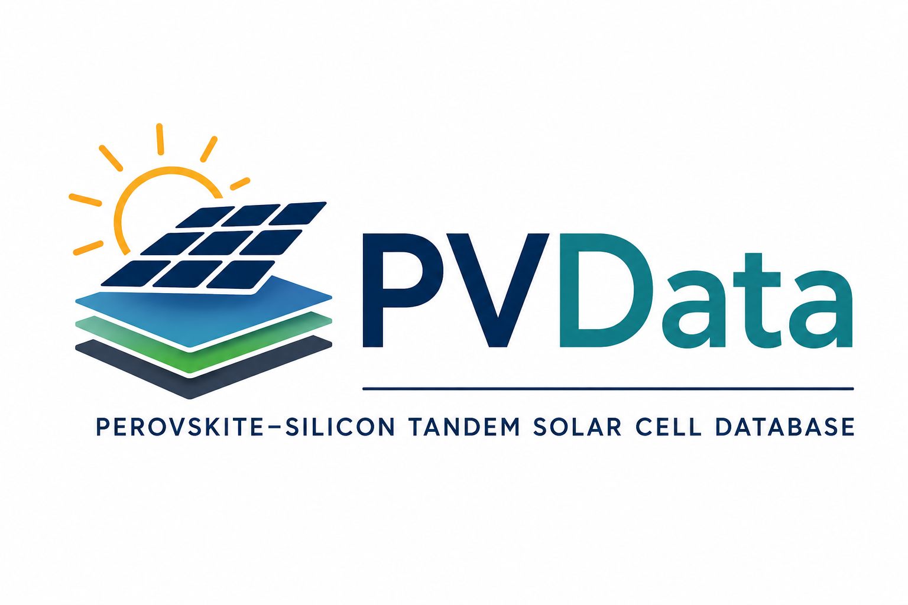

Research
Transparent conductors
Graphene, ZnO, AZO, and related thin films for optoelectronic and energy applications.
Interfaces and transport
Energy alignment, contact resistance, interface passivation, and charge extraction.
Characterisation
Hall effect, Van der Pauw, UV-Vis, Kelvin probe, X-ray absorption spectroscopy, Raman, and device testing.
Modelling
Device-level simulations to connect measured material properties to performance limits.
Projects

PVData
An open, interactive database of perovskite--silicon tandem solar cells, electrode materials, and indium use.
Research Notes
Short technical notes on semiconductor physics, interfaces, characterisation, and ideas arising from my research.
Featured Publications
Transparent Conducting Electrodes for Perovskite--Silicon Tandem Solar Cells
Nature Reviews Physics (2026)
Towards a Graphene Transparent Conducting Electrode for Perovskite/Silicon Tandem Solar Cells
Progress in Photovoltaics (2023)
Full publication list available on Google Scholar.
Contact
- Email: john.osullivan@materials.ox.ac.uk
- LinkedIn: linkedin.com/in/johnosullivan597
- Google Scholar: profile
- ORCID: 0000-0002-4136-0067